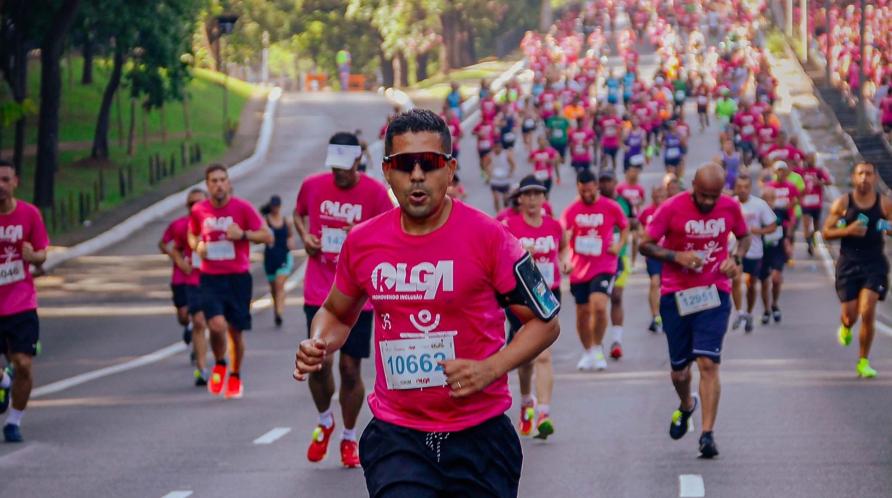

Encontre o evento
Busque pela modalidade, nome ou local.

LUCAS MARTINS · FOTOGRAFIA ESPORTIVA
Cada conquista tem uma história.
Encontre o registro da sua.
TODOS OS SEUS MOMENTOS, EM UM LUGAR
Escolha o álbum e acesse a plataforma
onde suas fotos estão disponíveis.
As fotos deste espaço são compradas em plataformas externas.
Você escolhe o evento aqui e conclui a compra no site indicado no álbum.
CATÁLOGO DEMONSTRATIVO · NOMES, DATAS, PLATAFORMAS E LINKS A CONFIRMAR COM O LUCAS
Tente outro nome ou remova os filtros.
LOJA LM SPORTSFOTO
Uma nova forma de comprar suas fotos,
diretamente no site da LM SportsFoto.
Compra e download pelo site serão lançados em breve.
Por enquanto, encontre suas fotos nos álbuns dos eventos.
 FUTEBOL / EM CAMPO
FUTEBOL / EM CAMPOPORTFÓLIO / LM SPORTSFOTO
O instante da superação. A intensidade de uma partida. A emoção que só quem vive o esporte conhece.
FOTOGRAFIAS / LUCAS MARTINS
Performance, emoção e movimento.
Um pouco do olhar da LM SportsFoto.


POR TRÁS DAS LENTES
Lucas Martins
LM SportsFoto
Capturando performance, emoção e movimento.
Este espaço receberá a história do Lucas, sua trajetória na fotografia e um retrato pessoal. Estamos preparando cada detalhe com a identidade dele.
Acompanhe no Instagram ↗DO EVENTO À SUA GALERIA
Busque pela modalidade, nome ou local.
Abra o álbum na plataforma indicada e encontre seus registros favoritos.
Nos álbuns externos, finalize a compra e receba os arquivos pela plataforma indicada.
VAMOS CRIAR JUNTOS
Cobertura de eventos, treinos e projetos de vídeo de drone.
Conte um pouco sobre o que você está planejando.